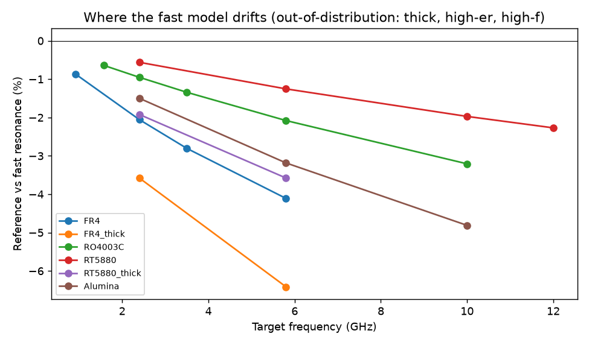
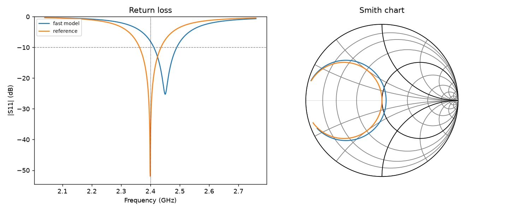
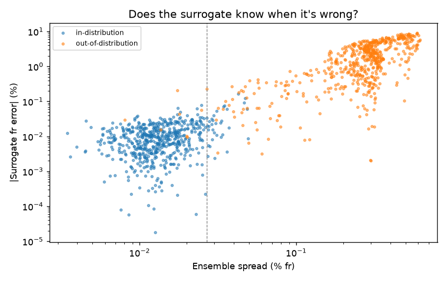
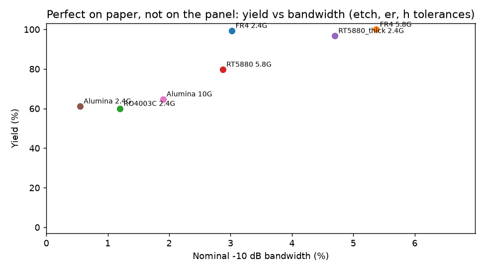

rf-agent
An AI agent designs patch antennas with physics models in its loop. When should it trust the fast model, when should it pay for the solver, and how do we keep it honest once the board is built?
Kartik Bhardwaj · AI engineer · github.com/cero753/rf-agent
Cheap predictions, expensive confirmation, independent grading
design_patch ─► predict_surrogate (µs, with uncertainty) ─ escalate? ─► verify_reference (budgeted)
agent ◄─────────────────────────── MCP tools ──────────────────────────────────────────┘
analyze_touchstone / diagnose_measurement ◄── measured .s1p from the bench
grader re-runs the reference on every final answer, whatever the agent claims
A 2.5% error misses the band
The fast model is off by 2.5% in resonance on average, up to 6.4% on thick FR-4 at 5.8 GHz.
A patch with loaded Q near 20 has about 3% bandwidth. Trusting the fast model gets 0 of 20 designs to spec; most land near −7 dB.
Drift grows with frequency, thickness and permittivity: exactly where a model should say it's unsure.

Fast model proposes, reference corrects
Resonance scales with 1/(L + 2ΔL), so the correction is physical, not a blind search. Converges in 2–3 iterations.
2.4 GHz on FR-4: −7.2 dB → −41.9 dB with 3 reference calls. 20 / 20 targets pass.
On the final geometry the fast model still predicts 2.45 GHz. The reference lands on 2.400 GHz.

Accurate where trained, and it knows where it isn't
Residual learning on dimensionless features (h/λ, W/h, εr, tanδ). Trained on 5,000 reference runs, thin low-εr boards only.
| Region | Surrogate | Fast model | Flagged |
|---|---|---|---|
| In distribution | 0.012% | 1.78% | 5% |
| Thick / ceramic | 2.4% | 6.4% | 99% |

Same correctness, fewer solver calls
| Arm | Pass | Solver calls |
|---|---|---|
| Trust fast model | 0 / 20 | 0 |
| Fast proposes, reference verifies and corrects | 20 / 20 | 3.3 |
| Surrogate iterates, escalates when unsure, one sign-off | 20 / 20 | 2.5 |
| Claude (Sonnet) over MCP, 6-call budget, 8 targets | 8 / 8 · 0 overclaims | 1.75 |
The surrogate arm escalated all 7 out-of-distribution targets. Claude trusted the surrogate in distribution, went to the solver when it flagged, and never called a design verified when the grader disagreed.
Claude beat the scripted loop by reading the suggested inset from the same solver call: tool outputs should carry the next action.
The board came back off-frequency. Why?
Fit permittivity, over-etch and loss tangent to the measured complex S11. Check whether the causes are separable. Propose the fix.
| Hidden truth | Diagnosis | Verdict |
|---|---|---|
| Laminate lot, εr 4.15 (nominal 4.4) | εr 4.158; etch-only fits 27× worse; lengthen L 0.87 mm → −43 dB | identified |
| Over-etch 120 µm | εr-only and etch-only fit equally well → measure a reference line on the same panel | says ambiguous |
| εr 4.25 and 60 µm over-etch | εr 4.248 plus over-etch 56 µm | identified |
A copilot that admits what the data can't tell it earns more trust than one that always has an answer.
Perfect on paper, 60% on the panel
500 Monte Carlo builds per design: etch ±50 µm, εr ±0.1, thickness ±5% (2σ).
FR-4 designs keep 99–100%. High-Q designs (RO4003C, alumina) drop to 60–65%.
The verification target should carry a yield or bandwidth margin, not only nominal S11.

What this does not show yet
Limits
- The reference is an analytic cavity model, not full-wave.
- Both models are mine, so the open-loop 0/20 is partly by construction.
- Bench measurements are synthetic, generated with hidden perturbations.
- The Claude arm is 8 runs: behaviour, not a benchmark.
Next
- openEMS (FDTD) behind the same verify_reference interface.
- Real VNA captures through analyze_touchstone.
- Yield-aware design objective instead of nominal S11.
- Larger Claude eval with adversarial targets and tighter budgets.
Everything reproduces from the repo
pip install -r requirements.txt pytest -q # 22 tests: Balanis + Pozar worked examples, surrogate, diagnosis, budget, MCP python demo.py # the whole story, step by step python evals/run_evals.py # open / closed / surrogate arms on 20 targets python evals/claude_arm.py # real Claude agent over MCP python diagnose.py data/measured_fr4_lot.s1p python server.py # MCP server for any agent
github.com/cero753/rf-agent · Balanis ch. 14 · Pozar ch. 3, 5 · Hammerstad 1975 · Getsinger 1973 · deep ensembles (Lakshminarayanan 2017)